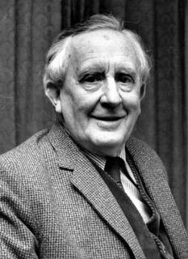

|
|

J. R. R. TolkienJohn Ronald Reuel Tolkien (J.R.R. Tolkien) 3 Ocak 1892’de Güney Afrika’nın Bloemfontein şehrinde doğdu. Babası küçük yaşta ölünce annesi iki oğlunu da alıp Sarehole adlı köye yerleşti ve Katolik Kilisesi’ne katıldı. Bu köyde kısa bir süre geçirmelerine rağmen köyün yemyeşil doğası, köy yakınındaki Moseley Bataklığı, kardeşiyle oynamaya gittiği Cole Bank Road değirmeni, o değirmende sürekli onları kovalayan ve ‘Beyaz Ogr’ ismini taktıkları değirmencinin oğlu Ronald derin izler bıraktı. (Hobbit diyarı Shire buradan esinlendi.) Ronald, Birmingham’daki King Edward’s okuluna başlamış. Çok zaman geçmeden başka bir yere taşınmak zorunda kalmışlar ve Ronald yeni taşındıkları Olver Road’a yakın olan St. Philips okuluna gitmeye başladı. Bir yıl sonra burs kazanınca tekrar King Edward’s okuluna geri döndü. Bu sırada annesini de şeker hastalığı yüzünden kaybeden yazar kardeşiyle beraber teyzeleri Beatrice’nin yanında kalmaya gitti ve Birmingham kilisesi hatibi Peder Francis Morgan’ın gözetimine verildi. King Edward’s okuluna giderken Ronald’ın dillere büyük yatkınlığı olduğu ortaya çıktı. Genç yaşta öğrendiği Latince ve Yunanca’ya sonradan Fince de eklendi. Bu dönemlerde Ronald kendine ait bir dili tasarlamaya başladı. Böylece Elf dillerinin temelleri atılmış oldu. Oturdukları Birmingham kentinde delikanlılık yıllarına geçen Ronald’ı etkileyen iki büyük yapı vardı. 29 metrelik Perrott’s Folly kulesi o yıllara göre olağanüstü büyüklüğü ile Ronald’ın beynine kazınmıştı. 1758 yılında John Perrott tarafından yapılan bu kule tuhaf mimarisi ile “Perrott’un divaneliği” ismini almış. Hemen bu kulenin yanında ise bir başka kule vardı. Ve bu İki Kule daha sonra yazacağı The Lord Of The Rings için esin kaynağı oldu. Ronald’ın gençlik yıllarına dair bir diğer önemli not ise Gamgee ismi ile o yıllarda tanışmış olması. Yerel pamuk markası olan Gamgee, Frodo’nun sadık dostu Sam’e soyadı oldu. Ronald 16 yaşındayken hayattaki tek gerçek aşkı 19 yaşındaki Edith Bratt ile tanıştı fakat Peder Francis Morgan iki gencin görüşmesini yasakladı. 1911 yılında klasik dil eğitimi almak için Exeter Koleji’ne gitti. 21 yaşında geri dönüp hiç unutamadığı Edith’i buldu ve 1916’da evlendiler. Ayrıca Ronald geri döndüğünde Edith başkasıyla nişanlıydı. Bu arada I. Dünya Savaşı başladı. Kısa bir süre sonra Tolkien’de orduya katıldı ve Fransa cephesinde savaştı. İki yakın dostunu bu savaşta kaybeden Tolkien çok yakınında patlayan bir bomba yüzünden İngiltere’ye geri döndü. Fakat bu savaş Tolkien üzerinde unutulmaz etkiler bıraktı. Savaş bittiğinde Oxford English Dictionary’de iş bulan Tolkien savaştan döndükten sonra hayatının büyük bir kısmını Oxford’da geçirdi. 1945 yılında Oxford’da Profesör olmasına kadar geçen zaman içerisinde 4 çocuk sahibi oldu. Bu süre içerisinde devasa hayal dünyası Orta Dünya’yı oluşturmaya devam etti. İlk kitabı bir çeviri olan Sir Gawain and The Green Knight‘ı yayınlandı. Entellektüel bir topluluk olan Inklings’i yakın dostu C.S. Lewis ile kurdu ve 1937 yılında The Hobbit’i yayımladı. Roman hem olumlu hem de olumsuz tepkiler aldı. Oxford’da profesör olan Tolkien’den nasıl olup da bir masal kitabı çıktığını soruyorlardı. Ama olumsuz eleştiriler bir işe yaramadı ve Hobbit kısa zamanda popüler oldu.Hobbit aslında Yüzükler Efendisi serisinin başlangıcıdır. Orta Dünya ilk kez bu kitapta okuyucuların karşısına çıkar. Bundan sonra Tolkien Yüzükler Efendisi üzerine çalışmaya başlar. 1971’de karısı Edith vefat etti. Tolkien bunun üzerine sadece iki yıl yaşayabildi ve 1973’te Kraliçe'den krallığın en önemli nişanlarından biri olan CBE unvanını almasından kısa bir süre sonra 81 yaşında vefat etti. ESERLERİ
ÖLÜMÜNDEN SONRA YAYIMLANANLAR
|
|||||||||||||||||||||||||||||||||||||||||||||||||||||||||